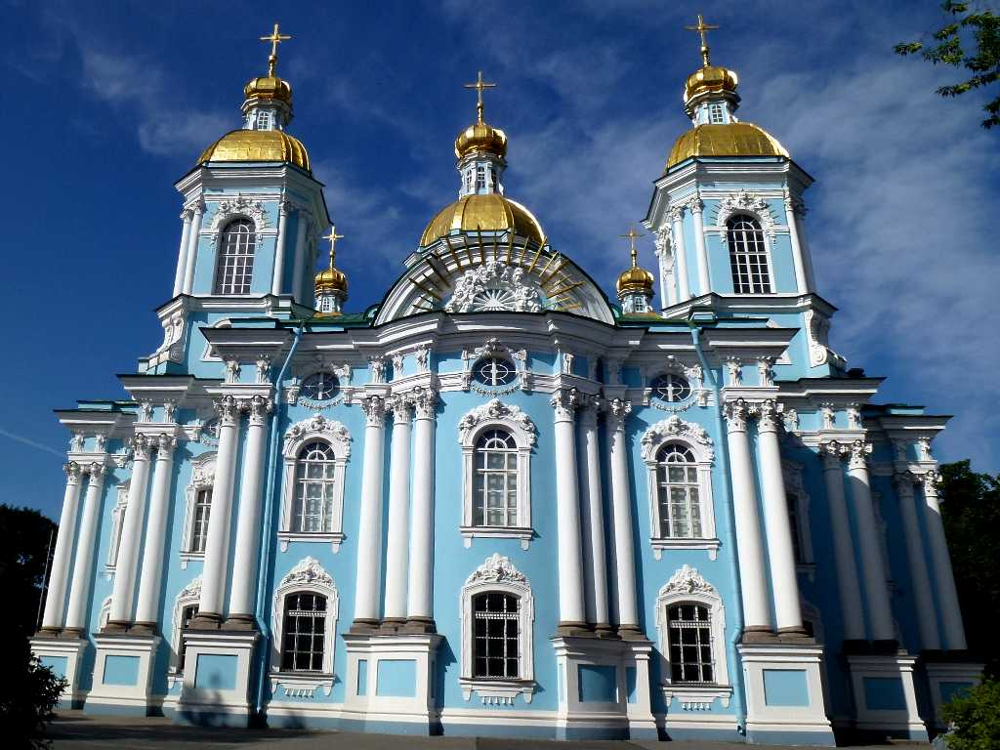
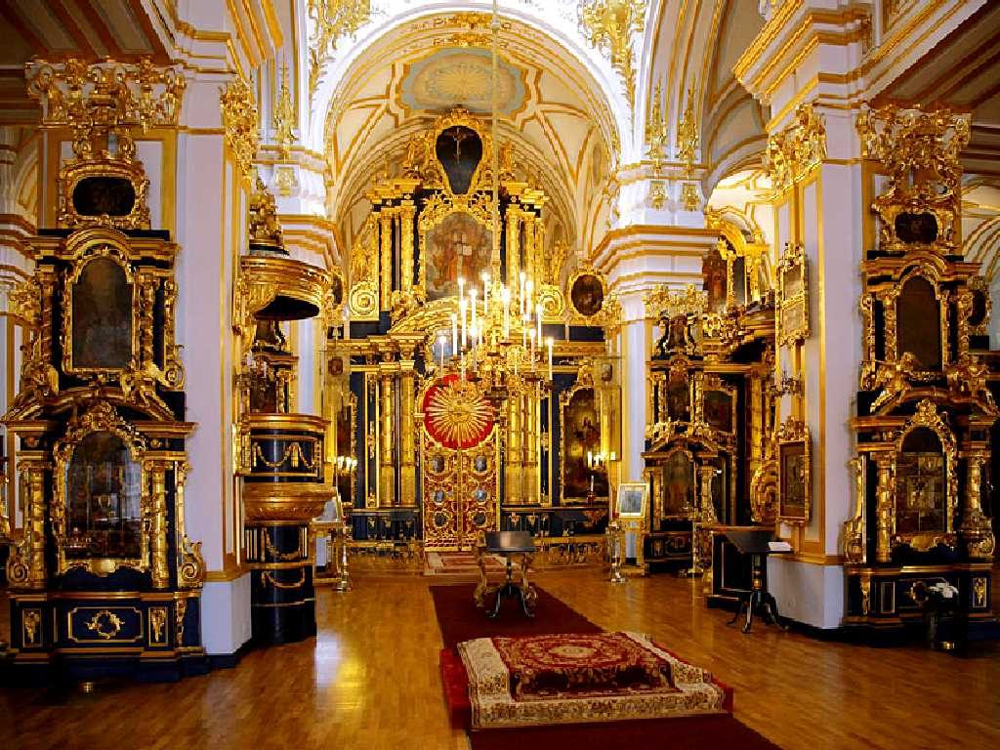
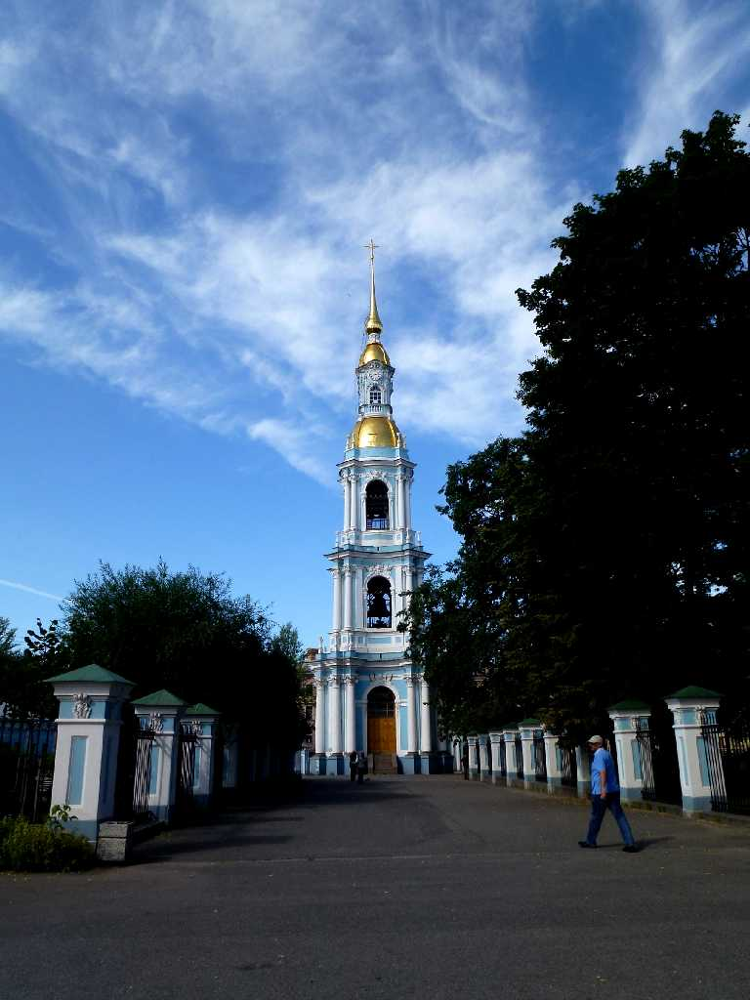
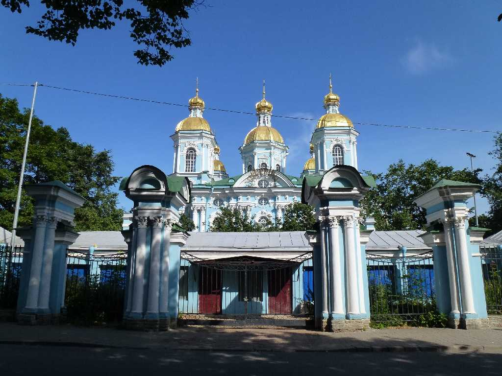
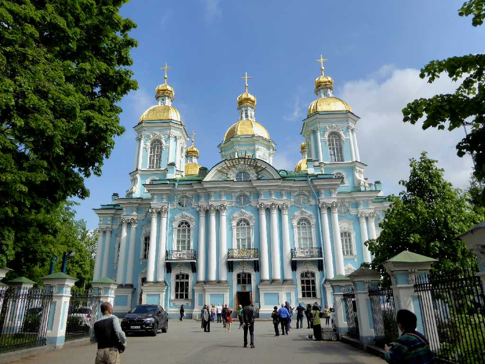
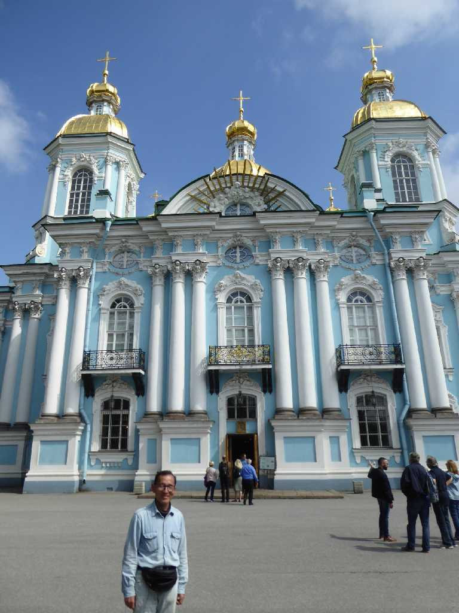

Nikolsky Cathedral Sankt Peterburg
８０日間世界一周鉄道の旅で２０日目 ニコラス大聖堂

Altar Nikolsky Cathedral
１７４３年に創られ１７６２年にエカテリーナⅡ世の命により海軍大聖堂となり船員の大聖堂と云われるようになった

Bell Tower Nikolsky Cathedral

July 13 2013 Gate Nikolsky Cathedral

Nikolsky Cathedral Sankt Peterburg
８０日間世界一周鉄道の旅で訪問以来４年ぶりの再訪問

June 10 2017 Nikolsky Cathedral